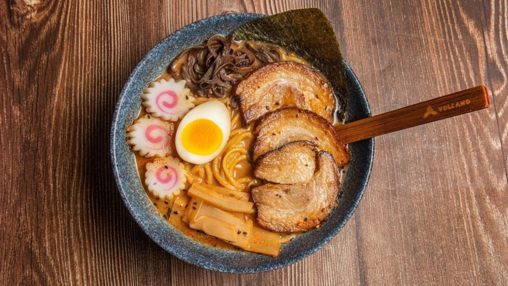

Sushi rolls
Butterfly, Philadelphia and Pink Lady rolls, tempura shrimp rolls and salmon sushi.
Japanese restaurant · Bastrop, TX

Sushi rolls, tonkatsu and spicy miso ramen, in a small, calm dining room.
HoursMon · 11 AM–9:30 PM717 State Hwy 71, Bastrop, TX 78602
What's on the menu
Favorites from the kitchen.
Butterfly, Philadelphia and Pink Lady rolls, tempura shrimp rolls and salmon sushi.

Tonkatsu and spicy miso ramen, plus wonton soup, sweet and sour soup and crab puffs.

A sushi combo, plates with egg rolls and fried rice, and cooked dishes like Hunan chicken.


4.5 ★ · 260 Google reviews
Delicious ramen and sushi. Our favorite is the tonkatsu ramen and the spicy miso ramen. Very nice staff. Sometimes there’s a language barrier with the staff but you should expect that when you’re wanting authentic Asian food. They don’t have kimchi on the menu (we would totally buy it if they did), they’ve never had a problem with us bringing in our own kimchi.
The food and service are wonderful. My kids prefer the Butterfly roll, but they also love the Philadelphia roll and the salmon sushi. Soups are all delicious as are the crab puffs.
We’ve been here several times and we consistently are served delicious fresh food, with the best service. The servers are swift to take your drink orders, and they keep an eye on refills and check on the tables to see if there’s anything else you need. I love the sushi combo and their wonton soup. My husband gets the Pink Lady Roll and he loves their Sweet and Sour soup.
Hecho aquí
Sushi made with fresh ingredients, and ramen with deeply savory broth. Dine in or take it home.
A small dining room with woven pendant lamps, warm wood slats and a glowing yellow sign out front. Cozy, calm and clean.
Friendly staff, never rushed. Takeout is just as good at home.

Ven por una
717 State Hwy 71, Bastrop, TX 78602
Dine in or take it home. The room is small, so call ahead for groups.